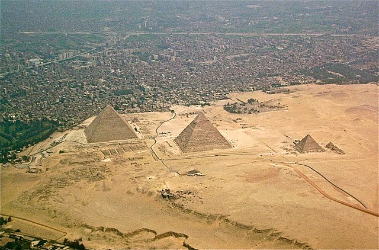
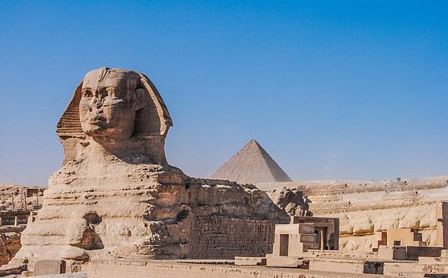

Explore key events that shaped the world we live in today.
Ancient Egypt is one of the world’s oldest and most fascinating civilizations. It is known for its pyramids, pharaohs, and remarkable contributions to science, mathematics, and architecture.
One of the Seven Wonders of the Ancient World, this pyramid is the tomb of Pharaoh Khufu and remains one of the largest and most iconic structures in Egypt.
A massive limestone statue with the body of a lion and the head of a Pharaoh, believed to represent the Pharaoh Khafre. It sits near the Great Pyramids.
